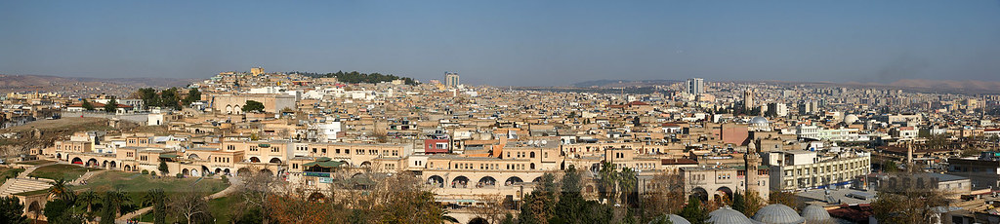

Şanlıurfa tarihi efsanelere konu olan Balıklıgöl yer alıyor. Göl, 150 metre uzunluğunda ve 30 metre genişliğinde, aynı zamanda derinliği 5 metreyi buluyor. İçinde efsanelerden de aşina olduğumuz balık türleri yer alıyor. Üstelik bu balıklara halk tarafından saygı gösteriliyor. Rivayete göre Hz. İbrahim’in ateşe atılmasının ardından, bir mucize gerçekleşir ve her yer güllük gülistanlık olur. Bu mucizenin gerçekleştiği yerin ise Balıklıgöl olduğuna inanılır. Balıklıgöl, Şanlıurfa’nın en önemli simgelerinden biri.
Şehrin en önemli simgelerinden bir diğeri ise Urfa Kalesi. Kalenin M.Ö. 10.000 yıllarına ait neolitik bir alan üzerine kurulduğu tahmin ediliyor. Tarihi yapının hemen yanından çıkarılan ve Şanlıurfa Müzesi’nde sergilenen 12.000 yılık Balıklıgöl Heykeli ve Kale alanı, havzanın tarihine tanıklık eder nitelikte. Kale, antik dönemde Osroene tarafından inşa edilmiş. Kalenin duvarları ise MS 814’te Abbâsîler tarafından yapılmış. Şehre kuş bakışı bir görünüm sunan kale, günümüzde açık hava müzesi konseptinde ziyaretçilerini misafir ediyor.
Geçtiğimiz zamanlarda Göbeklitepe’de gerçekleştirilen kazılarda, yerleşik yaşama geçişle ilgili mevcut bilgileri alt üst edecek buluntular keşfedilmişti. Göbeklitepe, M.Ö. 10.000 yani günümüzden 12.000 yıl öncesine tarihlenen Neolitik döneme ait bir inanç merkezi. 80 dönümlük alanı çevreleyen ören yeri, Kültür ve Turizm Bakanlığı tarafından 2005 yılında 1. Derece arkeolojik sit alanı ilan edilmiştir. Göbeklitepe, aynı zamanda tarihi anekdotlarda bilinen en eski ve en büyük tapınaktır. Dev sütunlardan ve üst üste dizilmiş ağır taşlardan oluşan Göbeklitepe’ye dair hala gizemi çözülemeyen birçok nokta bulunuyor. O dönemde el arabası ve iş aletleri bulunmadığı için yapının inşa süreci gizemini hala koruyor. Tapınağı oluşturan taşların taşınabilmesi için muhtemelen çok sayıda insanın ve yük hayvanının gücünden yararlanıldığı üzerinde duruluyor. Sütunların üzerinde bulunan hayvan figürü kabartmaları ise oldukça etkileyici. Eğer Şanlıurfa’ya yolunuz düşerse bu gizemli antik yapıyı mutlaka görmenizi tavsiye ediyoruz.